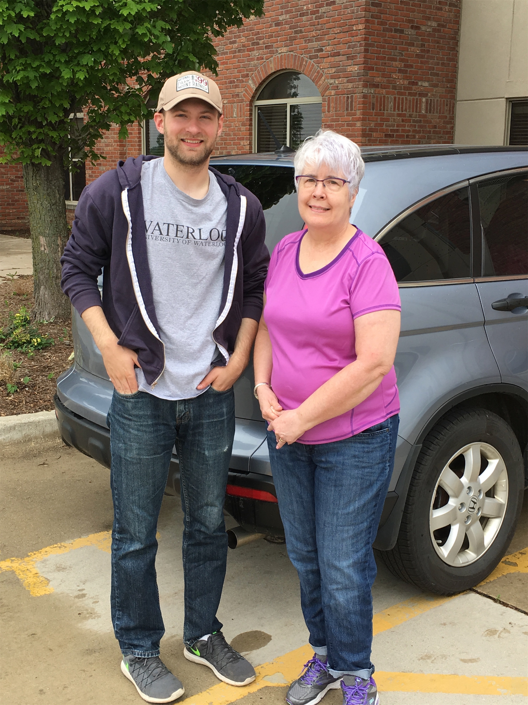
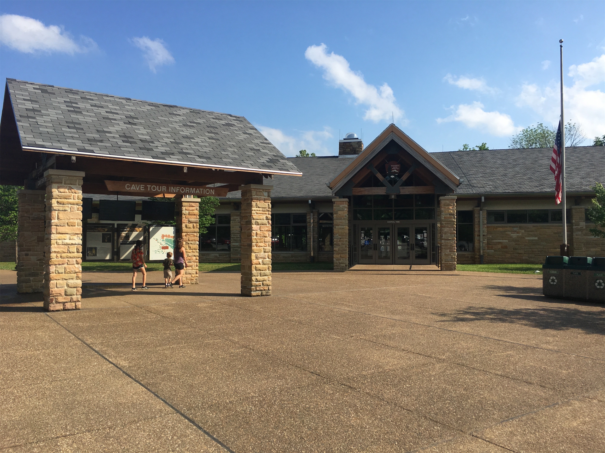
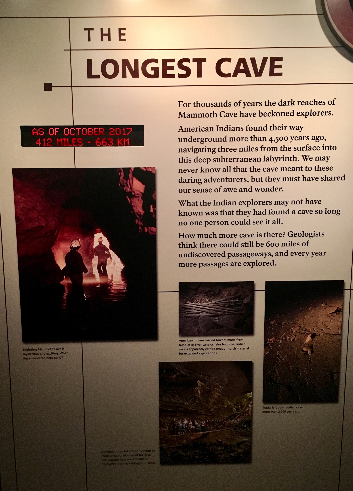
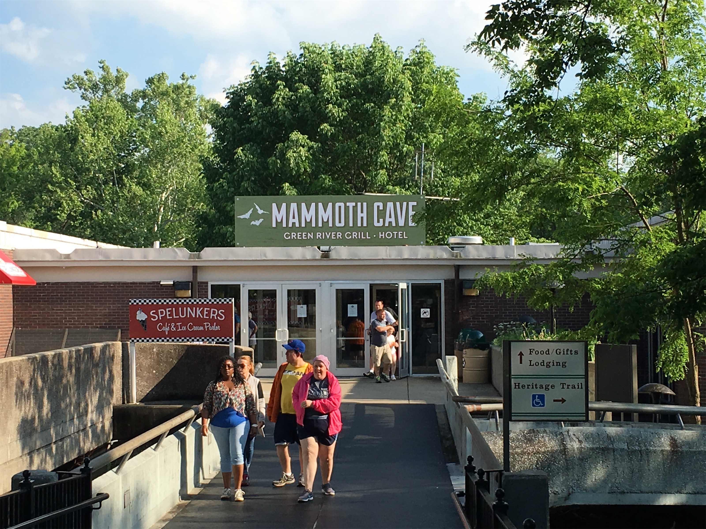
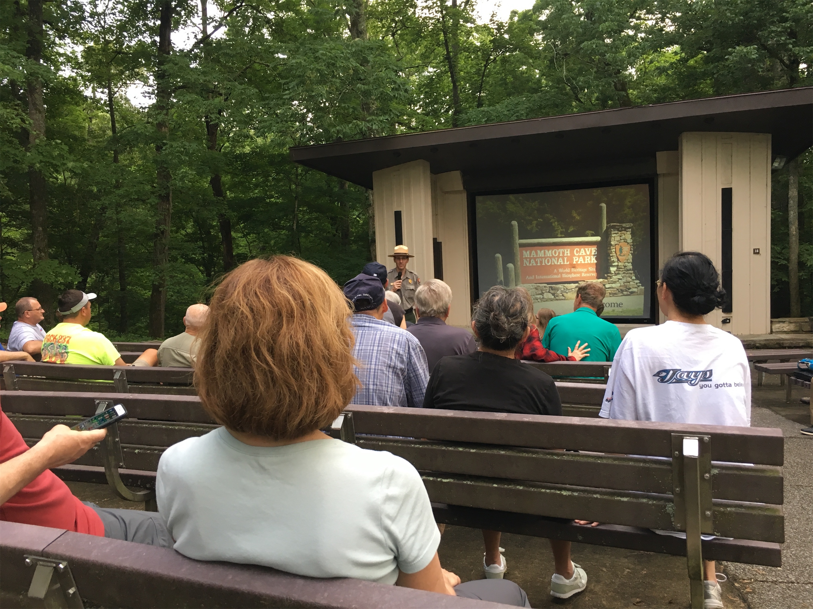
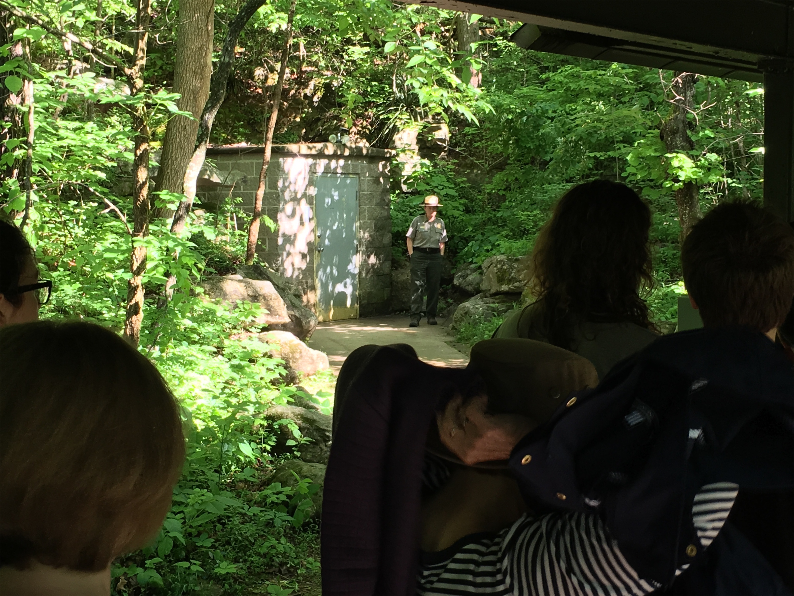
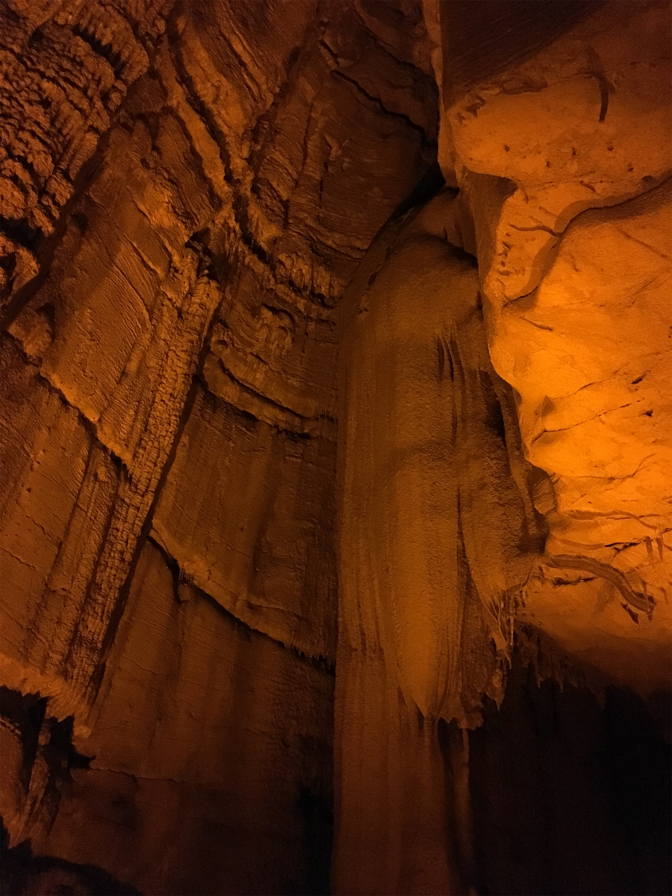
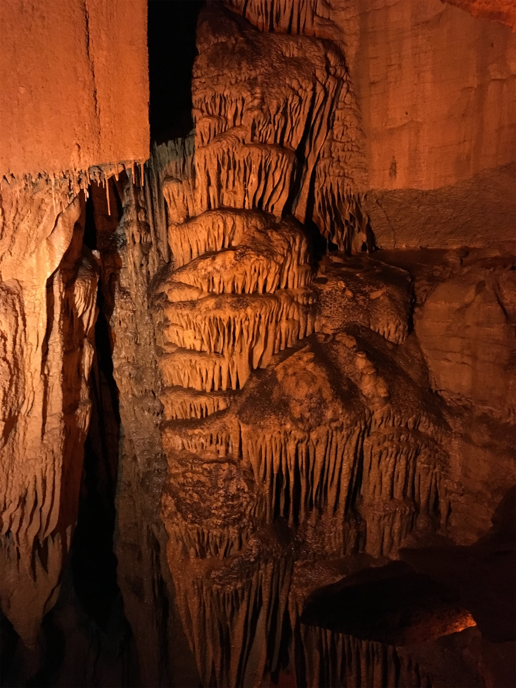
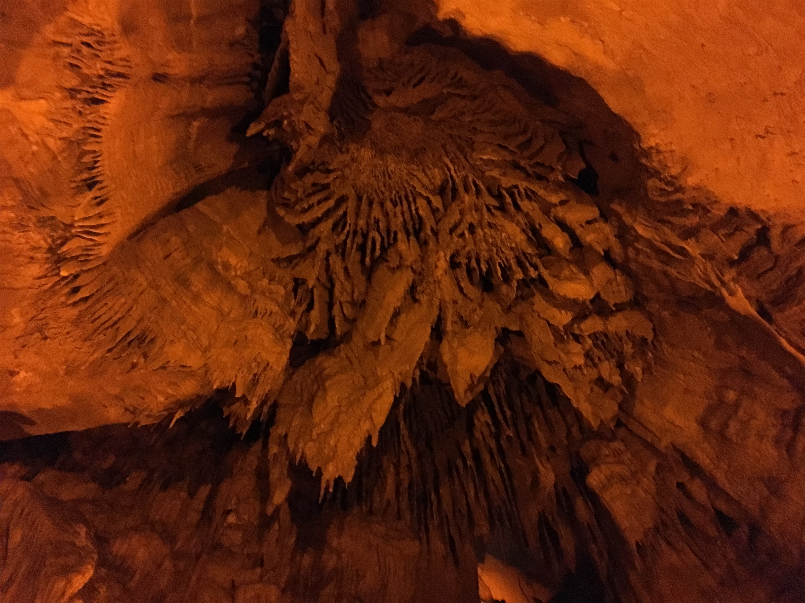
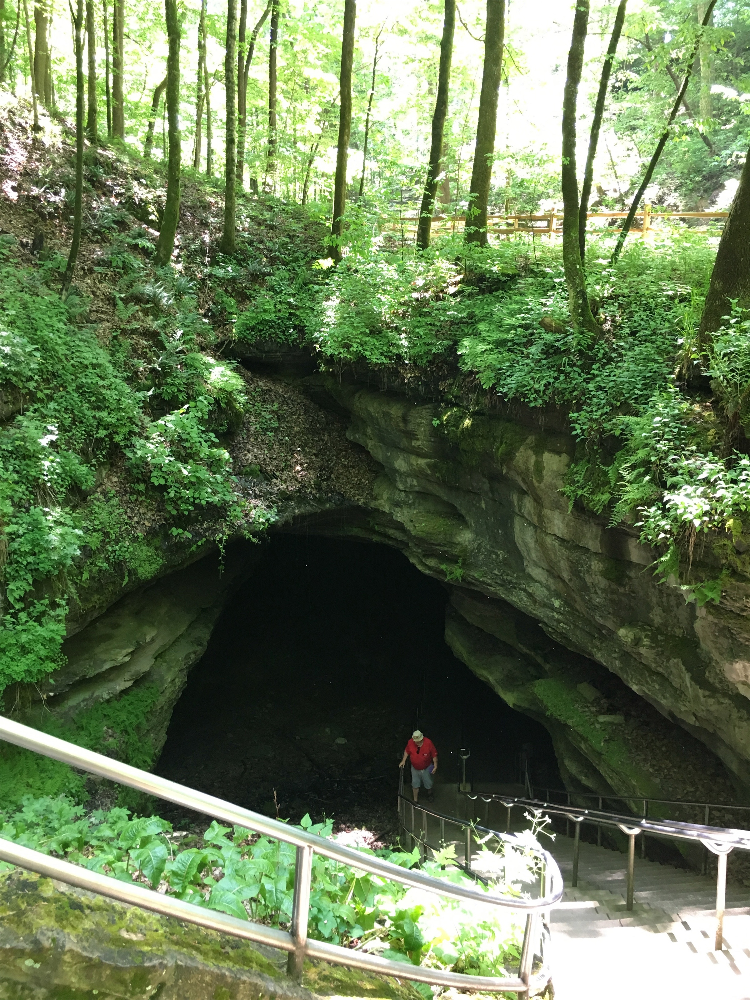

Saturday, May 19, 2018, 4:27 PM CDT
Mammoth Cave National Park, Cub Run, KY, United States
84°F Sunny
84°F Sunny
![]()
Deb, Nathan, and I arrived after a backroads trip from Asheville, NC while on the way home to MN. We stayed on site at the Lodge at Mammoth Cave (formally the Mammoth Cave Hotel), and Brad went to the 7 PM fireside ranger talk, which highlighted Mammoth and other caves around the world. The next day, we went to the terrific visitor’s center and museum, which was completely renovated about 5 years ago and offers about a dozen different cave tours, but they sell out fast so we reserved the 1.25 Hr, 1/4 mile Frozen Niagara tour in advance. This is the longest cave in the world, with over 400 miles of spaghetti-like passages in limestone, covered by a cap of sandstone, so little water seeps through the ceiling. This means that there are also few stalactites and stalagmites, but the Frozen Niagara tour, which starts with a bus ride to the man-made entrance, highlights the exceptions. The last photo is of the historic, or main, natural entrance. The massive rush of cold air coming up from it provided a nice relief from the heat and humidity.









